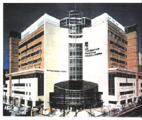
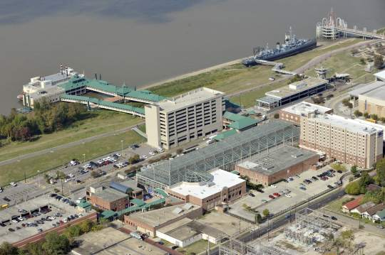
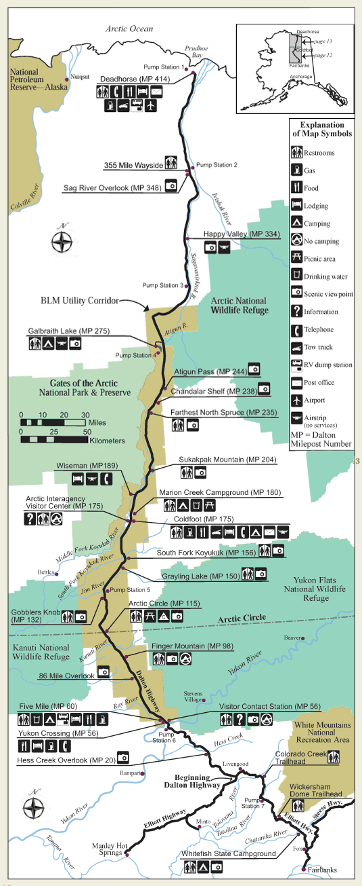

The Legend-News
What We Got Here
- C.W. Sightings: He’s everywhere! He’s everywhere!
- Skywalker: On the Road Again (Part I): Alan Chafin takes a trip.
- Old Home Café: “Green Stuff”
- Previously, in The Legend-News: An interview with C.W. McCall (Part Two).
- Song A’ Th’ Month: “Convoy”
C.W. Sightings
The Cultural Significance of C.W. McCall’s “CONVOY” (sounds important, doesn’t it?) Thanks to The Blonde Across The Room for the heads-up.
From Crispy Critter Greg Lucke: “Here’s a link to a video; San Miguel County is working to clear the Black Bear Pass from the Ouray side to the Telluride side.”
From CMT: 12 Country Classics: A Wailing Wall of Songs About Mother. On “Roses For Mama”: “…prepare to cry your eyes out before the song ends on a redemptive note.”
Eric Church’s “Dirt Road Anthem” is compared to C.W. McCall, but not nicely.
Another critic: What Is And What Never Should Be. He doesn’t like “Truck Driving Country” music.
About your favorite genre of music.
Crispy Critter Anders Convoy Løfaldli has created a Proboards forum for “Convoy, Everything related to the movie from 1978”.
Country.de published an article, “Convoy: Bill Fries & Chip Davis”. If you don't understand German, here’s the Google Translate version of the text. And if you're too lazy to go there, here’s the translated text:
Convoy: Bill Fries & Chip Davis
6 June 2012
By Manfred Vogel
A totally crazy song that originated in the time of the CB radio was the height of fashion. There are many terms used in spoken language and environment from the truck drivers in North America, which for a normal average Europeans do not always make sense. But the story is over yet — not least because it served as a template for a same-titled movie (with Kris Kristofferson in the title role), you could watch TV in the German see often enough.
Somehow they had made the American people to the heart, for “Convoy” sat 6 (in words: six) weeks at number 1 and was firmly in the pop charts, the top position. More than 7 million singles were sold.
Here, the song was actually a product of chance. Author Bill Fries was a leader of the advertising department of a company in Omaha, Nebraska. The product “Old Home Bread,” he invented the character of CW McCall, and the waitress Mavis. Their commercials were immensely popular and received various awards. With the song “Old Home Filler-Up An ’Kepp On-A-Truckin' Café” arranged as a frieze CW McCall in 1974 for the first time a stir, because then he appeared in the Top Twenty. This was followed by trucker songs like “Wolf Creek Pass” (a dangerous mountain pass in the Rockies of Colorado) and “Black Bear Road” before he’s “Convoy” sent into the race. So McCall reached its peak as a singer. Although he did not one or the other song in the charts, but a real hit was only 1977 “Roses For Mama”, a song that had nothing to do with the trucker theme nothing.
With country music was known as Frieze McCall nothing in mind. He had studied classical music, but discontinued the study, had been a journalist before he got into the advertising business. Since the late 1970s, no trace of him, he was no longer in the music business operates.
Bloomfield to Baghdad, the latest novel from Tom Claffey.
American Spirit and The Real McCall: An American Storyteller, a two-album bundle from American Gramaphone.
Alan Chafin is selling books from his personal library.
The latest review on The Thinking Chick’s Guide: Hatfields and McCoys (2011) (TV).
Skywalker: On the Road Again (Part I)
by Alan Chafin
April 2011.
I needed a road trip.
Silversmith, Snoopy, and I traversed the United States (twice in the case of the first and last listed) in July of 2000 (Convoy 2000, or C2K for short) to commemorate the (approximate) 25th anniversary of the release of “Convoy”, the groundbreaking song by C.W. McCall (known to be gentlebeing Bill Fries to us “Critters.”)
We had discussed doing it again 10 years later in 2010 (Convoy 2010 a.k.a. C2KX) but for various reasons we couldn’t quite do it.
We then discussed putting it off a single year and making the trip from coast to coast in 2011. (C2KXI — you get the pattern?) However, it again looked as though it wasn’t going to happen.
Dammit, I wanted to take a road trip! You see, I’m getting older, my health is not as good as it used to be, and there were places I wanted to see for the first time and a few others I wanted to see for (most likely) the last time.
In the succeeding 12 years since the original Convoy adventure I had not only changed jobs – programmer on a hospital’s payroll system

The hospital.
to database analyst in a casino’s marketing department

The casino.
but had changed geographic venue: from Arbutus, Maryland, to Baton Rouge, Louisiana. It was no longer possible for me to get two straight weeks of vacation. Sure, I had almost a month’s worth of vacation in my “bucket” but I was informed I couldn’t be spared for such a span. The most I would be given was a single week; including a weekend at both ends that came to nine days.
I sat down with mapping software, a list of places I wanted to visit, and a budget. What could I do with those?
My plan was ALASKA! You see, at the time I had visited 48 of the 50 states. Alaska was one of the two to which I had never been. (No, Hawaii wasn’t the other. I lived in that paradise for 3 years in my youth. More on the other later.)
Also, I’ve always felt that getting to a special destination should be part of the adventure. To quote Shepherd Book from the way-too-early canceled series, “Firefly”, “How you get there is the worthier part of the journey.”
And why not? Michael Palin of “Monty Python” fame once said, “From an airplane America disappears below you. From a train it opens out before you and you can take in its breathtaking beauty in the detail it deserves.” Unfortunately you cannot take a train all the way to Alaska; you can reach south Canada only. Also, there was no way I would be able to drive the entire way in the time I had.
However, you can bus all the way to Alaska.
Greyhound could take me from Baton Rouge to Seattle, Washington.
Greyhound Canada has a run from Seattle to Whitehorse, Yukon Territory.
The last day of the journey is a private bus that starts in the Yukon and ends in Fairbanks, Alaska. That last day would cost as much at the entire bus journey from Louisiana to the Yukon Territory but it was still within my budget.
I would have to fly home but I was willing to accept that.
Lastly, I had to decide what I would see in Alaska. There was no way I could see much in the few days I would have left after bussing that far but I decided I would make it count: I found a company that would rent me an SUV and camping gear and would permit me to drive it to the Arctic Circle! There is a road that travels from Fairbanks to about 300 miles into the Circle and ends just a few miles short of the Arctic Ocean. Now that is an adventure: a couple of days of driving through the Alaskan wilderness, camping in the wild, and heading to land where a day and a night totaled 8766 hours long.
How could I resist a camping trip where you are warned to “Camp a quarter mile away from your food. This is WILD TERRITORY. The danger is real.” and “Your cell phone won’t work here and AAA is days, not hours, away. Bring a CB radio or better yet a portable shortwave transmitter.” Sounded like fun to me!

The Dalton Highway.
(Stolen from Wikipedia.)
I started to plan, schedule, and make the various travel options all fit into the time I had available. I wasn’t certain I was going to be able to make it all work — I was close — when something happened that made all of my decisions for me.
Next time: Skywalker starts on his trip…
Old Home Café
“Green Stuff”
“What’s that green stuff in the mason jar?” asked Bob.
Jon looked up from his MacBook; he was working on the Café’s website, updating the menu. “Green stuff?” he asked.
“Yeah,” said Bob. “In the fridge. Looks sorta like pickle relish? I figured that you made it, so I didn’t try it.” Bob tapped his chest. “My acid reflux’s been acting up.”
Jon smiled. “You could have tried it,” he said. “That’s the mild version. I was going to make some of the hot stuff tonight.”
“What’s in it?” asked Bob.
“Jalapeños, onions, a couple other varieties of chilies, plus…” Jon leaned closer to Bob. He lowered his voice. “Secret spices,” he whispered.
Bob harrumphed. “What are you going to do, patent it?” he asked.
“Maybe,” said Jon. “I’ve been it making for myself, but Avis said that I ought to sell it. I’m thinking about it.”
“If it brings in customers, I’m all for it,” said Bob. He nodded toward the refrigerator. “That’s the mild stuff?” he asked.
“Yes,” said Jon. “Mild. Give it a shot.”
“Ohhhhh-kay,” said Bob. He plucked a spoon from a nearby cutlery tray, opened the refrigerator to a cold blast of air, and took the unlabeld jar of “green stuff”. “You’re sure that it’s mild?” he asked again, still hesitant to try it. “Not like that chili from last week?”
“Yes,” said Jon. “Mild. And I never said that the chili was mild; you just sampled the wrong pot.”
Bob unscrewed the lid of the jar and scooped a small bit of green stuff onto his spoon. He stared at the stuff, as if he still couldn’t believe Jon’s veracity. “Mild,” he said, musingly. “I guess I’ll have to trust you,” he said, and popped the concoction into his mouth.
Bob chewed slowly, masticating throughly, expecting the worst. But to his surprise, the spiciness of the green stuff did not have the mouth-on-fire effect that he thought that it would have. He swallowed.
“It’s good; but it ain’t mild. More like medium,” said Bob. “Not hot, though I’m still going to pop a couple of Rolaids®.”
“Thank for the review,” said Jon. “You want to offer it to the customers? I usually put it on hot dogs, but it works in a lot of sandwiches.”
Bob mulled the idea. “Yeah, whip up a quart,” he said. “And put it on the menu. Call it ‘hot’, though, because it’s not ‘mild’.”
Jon rapidly typed on his notebook, then clicked the trackpad a few times. “Done,” he said.
Previously, in The Legend-News
From the 2003 March 17 issue of The Legend-News.
An Interview With C.W. McCall (Part Two)
The Legend-News recently sat down with a fully-loaded iPod and a fully-charged PowerBook, and got this exclusive interview with country music legend C.W. McCall.
Legend-News: C.W., you’ve travelled over a lot of the U.S.A., both during your touring days and while in retirement. What was the most scenic route on which you’ve driven?
C.W. McCall: Me an’ Earl was haulin’ chickens on a flatbed out of Wiggins, and we’d spent all night on the uphill side of thirty-seven miles of hell called Wolf Creek Pass.
LN: What was your opinion of the Pass?
CW: Earl said, “My, ain’t this purdy up here.” I agreed.
LN: What other places have you travelled? What did you do?
CW: Well, I’ve walked the line on 89 in the Arizona sun, I’ve caught a star on U.S. one-oh-one, changed a tire on the rock-bound coast of Maine, shoveled snow up in Idaho, and been stuck on the Kansas plains.
LN: You’ve been almost everwhere.
CW: I’ve trucked all over this land, from Maine to the Rio Grande.
LN: Are there any particular roads that you’d like to revisit?
CW: I’m gonna take Old 30 one more time. Three thousand miles of rockin’, rollin’ highway.
LN: Do you often travel on the Interstate highways?
CW: Yeah, but it just don’t send those shivers down my spine.
LN: What’s the worst stretch of road on which you’ve been?
CW: U.S. 550, south of Ouray, Colorado, after a snowfall.
LN: It’s treacherous?
CW: Especially for the plow jockeys. Ya never quite know what time a’ the night you gonna die in the Riverside Slide.
LN: What was the most exciting drive that you’ve taken?
CW: Well, me an’ Earl was workin’ the superslab outside a’ that Ogallala, when outta town come a local clown in a ’65 Impala. Old boy got on his microphone, says “How’s about a little showdown?” We won the race when he got too close and got a terminal dose a’ that good ol’ Hereford gas.
LN: Bet he backed off about five miles or so.
Next Issue: Wilderness.
Song A’ Th’ Month
The best damn trucking song ever, now in its 37th year of popularity.
There’s a special treat at the end.
Convoy
(C.W. McCall, Bill Fries, Chip Davis)
[On the CB]
Ah, breaker one-nine, this here’s the Rubber Duck. You gotta copy on me, Pig Pen, c’mon? Ah, yeah, 10-4, Pig Pen, fer shure, fer shure. By golly, it’s clean clear to Flag Town, c’mon. Yeah, that’s a big 10-4 there, Pig Pen, yeah, we definitely got the front door, good buddy. Mercy sakes alive, looks like we got us a convoy…
 Was the dark of the moon on the sixth of June
Was the dark of the moon on the sixth of June
In a
Kenworth
pullin’ logs
Cab-over
Pete
with a reefer on
And a
Jimmy
haulin’ hogs
We is headin’ for bear on I-one-oh
’Bout a mile outta Shaky Town
I says, “Pig Pen, this here’s the Rubber Duck.
“And I’m about to put the hammer down.”
[Chorus]
’Cause we got a little convoy
Rockin’ through the night.
Yeah, we got a little convoy,
Ain’t she a beautiful sight?
Come on and join our convoy
Ain’t nothin’ gonna get in our way.
We gonna roll this truckin’ convoy
’Cross the U-S-A.
Convoy!
[On the CB]
Ah, breaker, Pig Pen, this here’s the Duck. And, you wanna back off them hogs? Yeah, 10-4, ’bout five mile or so. Ten, roger. Them hogs is gettin’
in-tense up here.
By the time we got into Tulsa Town,
We had eighty-five trucks in all.
But they’s a roadblock up on the cloverleaf,
And them bears was wall-to-wall.
Yeah, them smokies is thick as bugs on a bumper;
They even had a bear in the air!
I says, “Callin’ all trucks, this here’s the Duck.
“We about to go a-huntin’
bear.”
[Chorus]
’Cause we got a great big convoy
Rockin’ through the night.
Yeah, we got a great big convoy,
Ain’t she a beautiful sight?
Come on and join our convoy
Ain’t nothin’ gonna get in our way.
We gonna roll this truckin’ convoy
’Cross the U-S-A.
Convoy!
[On the CB]
Ah, you wanna give me a 10-9 on that, Pig Pen? Negatory, Pig Pen; you’re still too close. Yeah, them hogs is startin’ to close up my sinuses. Mercy sakes, you better back off another ten.
Well, we rolled up Interstate 44
Like a rocket sled on rails.
We tore up all of our swindle sheets,
And left ’em settin’ on the scales.
By the time we hit that Chi-town,
Them bears was a-gettin’ smart:
They’d brought up some reinforcements
From the Illinoise National Guard.
There’s armored cars, and tanks, and jeeps,
And rigs of ev’ry size.
Yeah, them chicken coops was full’a bears
And choppers filled the skies.
Well, we shot the line and we went for broke
With a thousand screamin’ trucks
An’ eleven long-haired Friends a’ Jesus
In a chartreuse micra-bus.
[On the CB]
Ah, Rubber Duck to Sodbuster, come over. Yeah, 10-4, Sodbuster? Lissen, you wanna put that micra-bus right behind that suicide jockey? Yeah, he’s haulin’ dynamite, and he needs all the help he can get.
Well, we laid a strip for the Jersey shore
And prepared to cross the line
I could see the bridge was lined with bears
But I didn’t have a dog-goned dime.
I says, “Pig Pen, this here’s the Rubber Duck.
“We just ain’t a-gonna pay no toll.”
So we crashed the gate doing ninety-eight
I says “Let them truckers roll, 10-4.”
[Chorus]
’Cause we got a mighty convoy
Rockin’ through the night.
Yeah, we got a mighty convoy,
Ain’t she a beautiful sight?
Come on and join our convoy
Ain’t nothin’ gonna get in our way.
We gonna roll this truckin’ convoy
’Cross the U-S-A.
| Convoy! | Ah, 10-4, Pig Pen, what’s your twenty? |
| Convoy! | Omaha? Well, they oughta know what to do with them hogs out there fer shure. Well, mercy |
| Convoy! | sakes, good buddy, we gonna back on outta here, so keep the bugs off your glass and the bears off your… |
| Convoy! | tail. We’ll catch you on the flip-flop. This here’s the Rubber Duck on the side. |
| Convoy! | We gone. ’Bye,’bye. |
“Convoy” can be found on the albums C.W. McCall’s Greatest Hits and The Best of C.W. McCall.
Special Treat: toldja there’d be one! The (in my opinion) worst cover of “Convoy” ever, by Prolix. It’s Not Safe For Work. Heck, it’s Not Safe For Home! Keep the kiddies’ ears closed when you listen to this.
Next Issue: Flag waving.
The Legend-News
is published monthly by TechRen Enterprises, stuck in your head. Copyright 2012 TechRen Enterprises. Send subscription requests, unsubscribe demands, complaints, kudos, suggestions, news and other contributions to
Legend-News@cw-mccall.com.
Almost everything in
The Legend-News
has been written by Ed. Floden, except for the stuff that he blames on someone else.
“No Pink Floyd before coffee… ever!
”